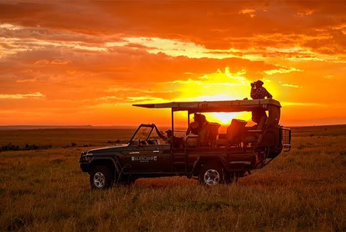

Responsible Trails
We craft low-impact, guided hiking paths that preserve the natural environment while respecting local wildlife migration corridors.
We craft low-impact, guided hiking paths that preserve the natural environment while respecting local wildlife migration corridors.

By collaborating directly with families living near conservation areas, we ensure travel revenue builds schools and alternative livelihoods.

Through proactive visitor workshops and native tree-planting programs, we work to protect Kenya's pristine eco-layers from degradation.